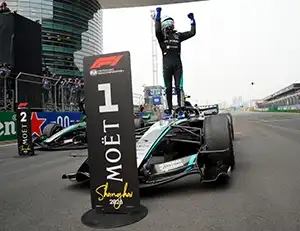

RACE RESULTS

Round 1 — Australian Grand Prix | March 6–8
Albert Park CircuitMelbourne, Australia
- 1st Place: George Russell (Mercedes)
- 1:23:06.801
- 2nd Place: Kimi Antonelli (Mercedes)
- +2.974
- 3rd Place: Charles Leclerc (Ferrari)
- +15.519
Mercedes dominated the season opener with a front-row lockout, but the race was far from straightforward. Ferrari's Leclerc launched from P4 to steal the lead at Turn 1, engaging in an early battle with Russell before Mercedes used a well-timed Virtual Safety Car pit stop to jump the Ferraris and take control. Russell held on for the win, with Antonelli close behind. Oscar Piastri couldn't start after crashing on his reconnaissance lap, and Verstappen recovered from last to sixth after a grid penalty.
Round 2 — Chinese Grand Prix | March 13–15
Shanghai International CircuitShanghai, China
- 1st Place: Kimi Antonelli (Mercedes)
- 1:33:15.607
- 2nd Place: George Russell (Mercedes)
- +5.515
- 3rd Place: Lewis Hamilton (Ferrari)
- +25.267
Teenage sensation Kimi Antonelli claimed his maiden F1 victory, becoming the second-youngest grand prix winner in history. Hamilton jumped both Mercedes at the start to briefly lead, but Antonelli fought back within two laps and never looked back. A fierce intra-Ferrari battle between Hamilton and Leclerc drained Hamilton's battery, allowing Russell to pass him for second. Both McLarens, plus cars from Audi and Williams, failed to start due to electrical issues — meaning Piastri completed zero laps across the first two rounds.
Round 3 — Japanese Grand Prix | March 27–29
Suzuka International Racing CourseSuzuka, Japan
- 1st Place: Kimi Antonelli (Mercedes)
- Winner
- 2nd Place: Oscar Piastri (McLaren)
- +13.722s
- 3rd Place: Charles Leclerc (Ferrari)
- +15.270s
Antonelli made it back-to-back wins but had to do it the hard way. He dropped to sixth off the line after a terrible start from pole, while Piastri and Russell ran at the front. A Safety Car on lap 22 — triggered by a terrifying 50G crash for Haas rookie Oliver Bearman — allowed Antonelli to pit from the effective lead and re-emerge in P1. From there he drove away with ease, finishing over 13 seconds clear of Piastri, who was scoring his first race finish of the season. Leclerc held off a frustrated Russell in a tense late-race duel for third. Antonelli became the youngest championship leader in F1 history.